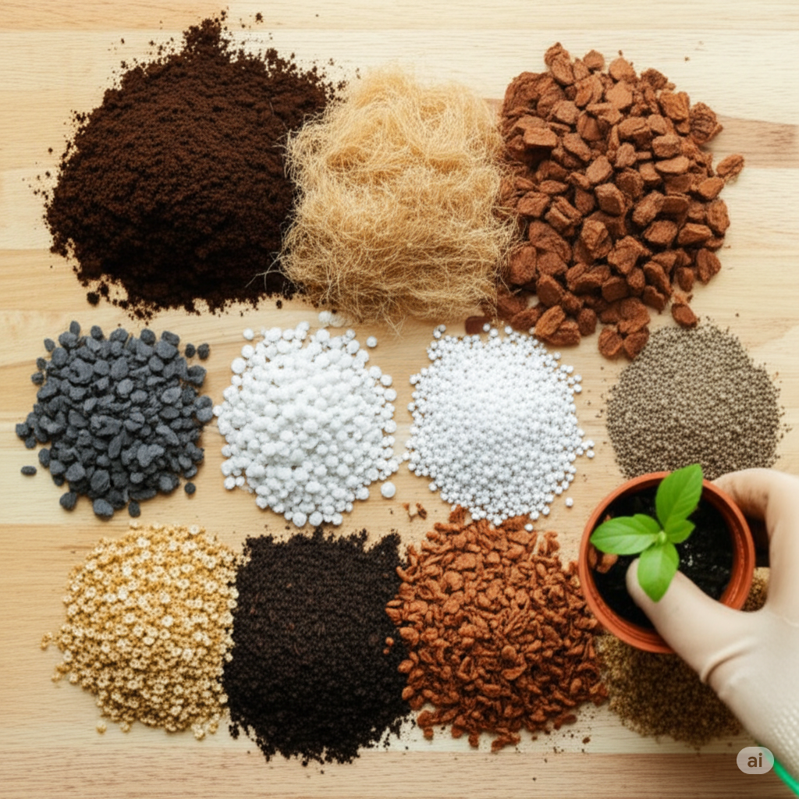

Você sabe o que tem no substrato da sua planta?

No universo da jardinagem, falamos muito sobre luz, água e adubação. Mas e a base de tudo? Aquilo que envolve as raízes e sustenta a vida da sua planta – o substrato? Ele é, sem dúvida, um dos pilares mais negligenciados e, paradoxalmente, um dos mais cruciais para o sucesso de qualquer cultivo.
Se você pensa que "terra é tudo igual", prepare-se para uma revelação. O substrato é um ecossistema complexo, uma matriz viva e dinâmica onde as funções vitais da planta acontecem.
O Substrato: Um Ecossistema Vital e Dinâmico
Para as raízes, o substrato é o seu mundo. Ele deve oferecer:
- Suporte e Ancoragem: Fixar a planta com estabilidade.
- Gestão da Água: Reter o necessário e drenar o excesso.
- Aeração Essencial: Garantir respiração das raízes.
- Retenção de Nutrientes: Liberar nutrientes gradualmente.
- Vida Microbiana: Microrganismos que protegem e nutrem.
Componentes Comuns do Substrato
- Terra vegetal: base orgânica, precisa de complementos.
- Fibra de coco: leve e com boa retenção de umidade.
- Vermiculita: retém água e nutrientes.
- Perlita: cria espaços de ar, ótima para drenagem.
- Areia grossa: acelera o escoamento da água.
- Casca de pinus: estrutura e aeração.
- Carvão vegetal: filtra impurezas e ajuda no pH.
- Húmus de minhoca: adubo vivo e completo.
- Esfagno: ideal para umidade constante.
- Pedra-pomes ou brita: drenagem de longa duração.
Como Personalizar o Substrato?
- Suculentas: 50% substrato, 25% perlita, 25% areia grossa.
- Monstera e Philodendron: 40% base, 30% casca, 15% perlita, 15% húmus.
- Samambaias: 50% orgânico, 20% fibra, 20% perlita, 10% húmus.
- Orquídeas: Casca, carvão e esfagno, sem terra.
Quando Trocar o Substrato?
O substrato pode compactar, esgotar ou cheirar mal com o tempo. Repotagens a cada 1–2 anos são ideais.
- Água que não drena.
- Cheiro estranho ou presença de mofo.
- Planta estagnada ou raízes espremidas.
💡 Dica: Um substrato saudável é invisível, mas transforma toda a planta. Comece por ele!
Tem uma receita de substrato que funciona pra você? Compartilha com a gente!
← Voltar para o blog